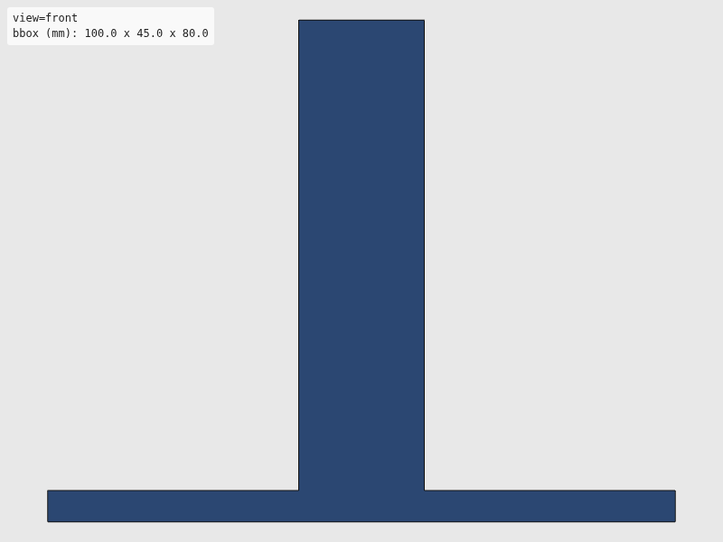
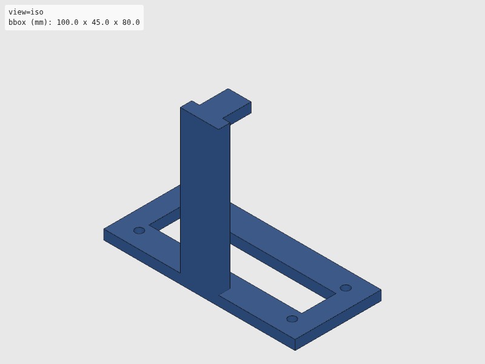
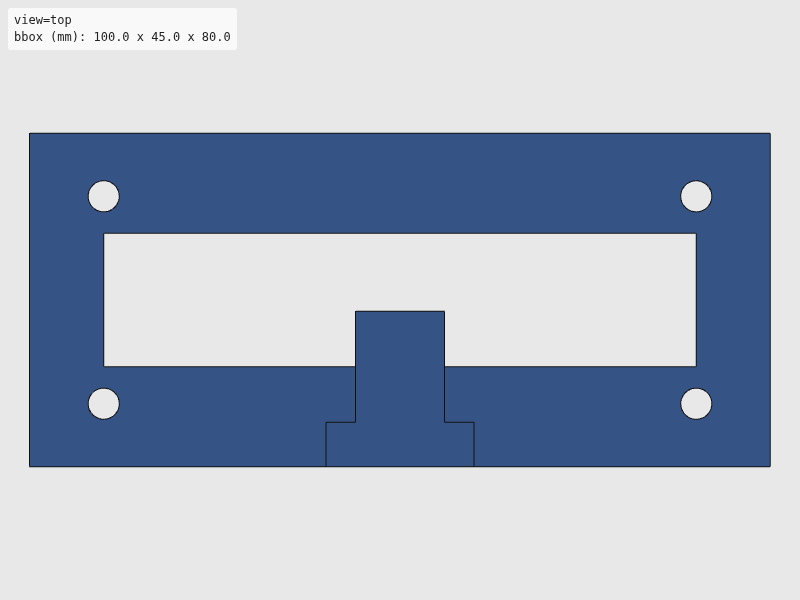
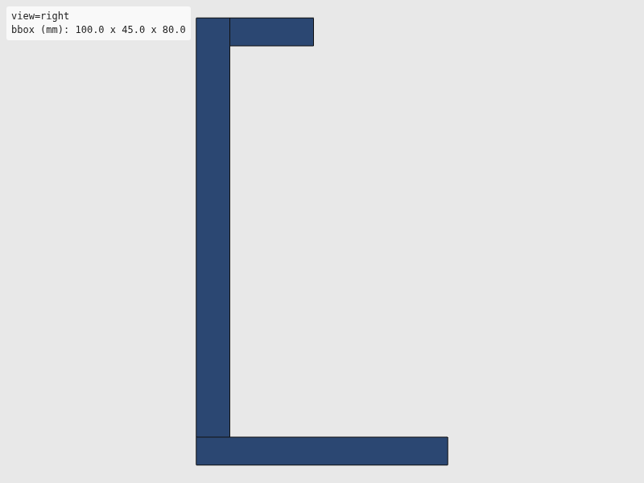

Verdict: review
Green is necessary, not sufficient: these checks cannot see local defects. Look at the render and decide.




The intent as written, for comparison with the renders. Not checked.
"""Tip ejector station for dPette+ — universal single/multi-channel.
L-bracket with a horizontal finger that presses the side-mounted tip
ejector lever. Wide waste slot fits both single-channel and 8-channel
tip ejection. Robot moves pipette laterally into the finger.
Usage:
uv run --group cad python src/hardware/cad/dpette/dpette_tip_release.py
Ported from Antonio Lamb's CadQuery source (PR #48) to build123d;
geometry and parameters preserved verbatim.
"""
import sys
from pathlib import Path
from build123d import Box, Cylinder, Pos
sys.path.append(str(Path(__file__).resolve().parent.parent))
from util.export import export_part
sys.path.pop()
# --- Contact finger ---
FINGER_WIDTH = 12.0
FINGER_DEPTH = 15.0
FINGER_THICK = 5.0
# --- Vertical arm ---
ARM_HEIGHT = 75.0
ARM_WIDTH = 20.0
ARM_THICK = 6.0
# --- Base plate ---
BASE_X = 100.0
BASE_Y = 45.0
BASE_Z = 5.0
# --- Waste slot (wide enough for 8 tips @ 9 mm pitch) ---
WASTE_SLOT_W = 80.0
WASTE_SLOT_D = 18.0
# --- Mounting (4x M4) ---
M4_CLEARANCE = 4.2
BOLT_SPACING_X = 80.0
BOLT_SPACING_Y = 28.0
def build_tip_release():
"""L-bracket: base + arm + finger. Tips fall through waste slot."""
# Base plate minus waste slot
base = Box(BASE_X, BASE_Y, BASE_Z)
base = base - Box(WASTE_SLOT_W, WASTE_SLOT_D, BASE_Z + 2)
# 4x M4 through-holes
for sx in (-1, 1):
for sy in (-1, 1):
hole = Pos(sx * BOLT_SPACING_X / 2, sy * BOLT_SPACING_Y / 2, 0) * Cylinder(
M4_CLEARANCE / 2, BASE_Z + 2
)
base = base - hole
# Vertical arm flush with back edge of base
arm_y = -BASE_Y / 2 + ARM_THICK / 2
arm_z = BASE_Z / 2 + ARM_HEIGHT / 2
arm = Pos(0, arm_y, arm_z) * Box(ARM_WIDTH, ARM_THICK, ARM_HEIGHT)
# Horizontal finger extending forward from the top of the arm
finger_y = arm_y + ARM_THICK / 2 + FINGER_DEPTH / 2
finger_z = BASE_Z / 2 + ARM_HEIGHT - FINGER_THICK / 2
finger = Pos(0, finger_y, finger_z) * Box(FINGER_WIDTH, FINGER_DEPTH, FINGER_THICK)
return base + arm + finger
if __name__ == "__main__":
export_part(build_tip_release(), "dpette", "dpette_tip_release")
| Check | Status | Detail |
|---|---|---|
| file_integrity | PASS | binary STL: header present, 2096 triangles, file length matches 84 + 50*n |
| watertight | PASS | watertight=True, winding_consistent=True, euler_number=-8 (reported only, not asserted — plan §7.2) |
| bbox | SKIP | no --envelope given |
| volume | SKIP | no --volume-band given |
| browser_load | PASS | viewer reported body[data-state]=rendered |
| render | PASS | 4 view(s) captured at 800x600 |